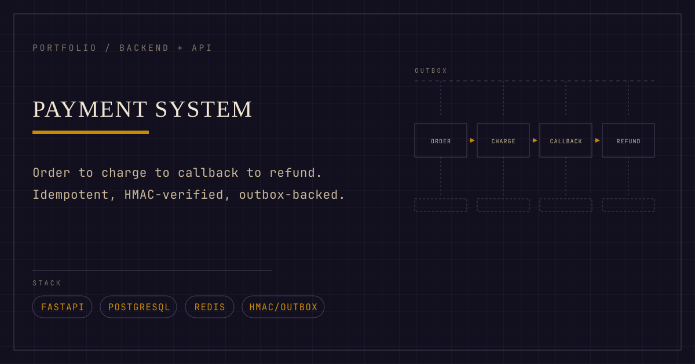
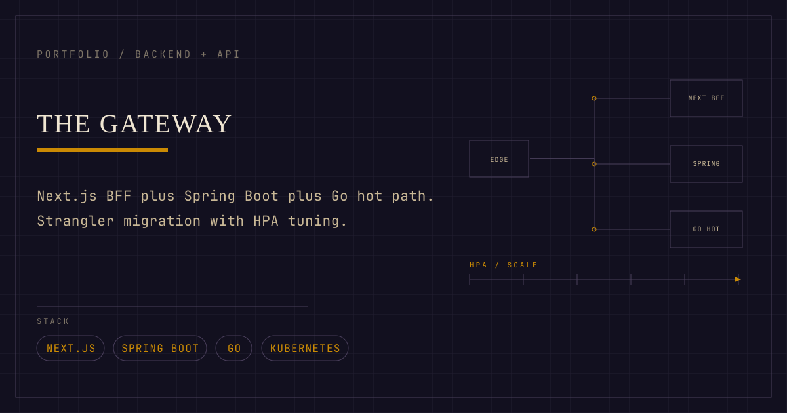
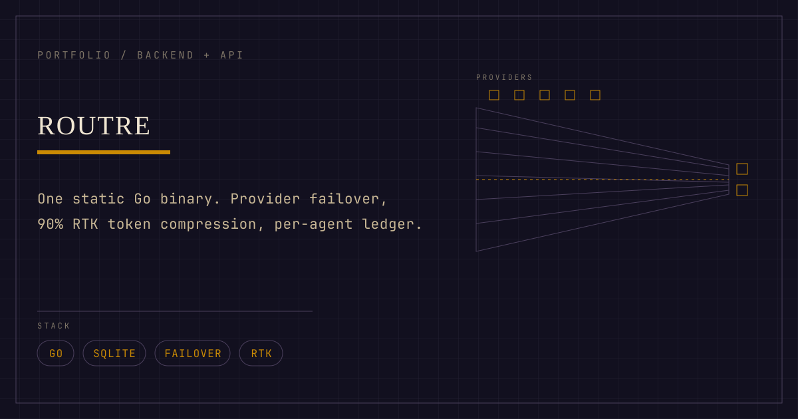
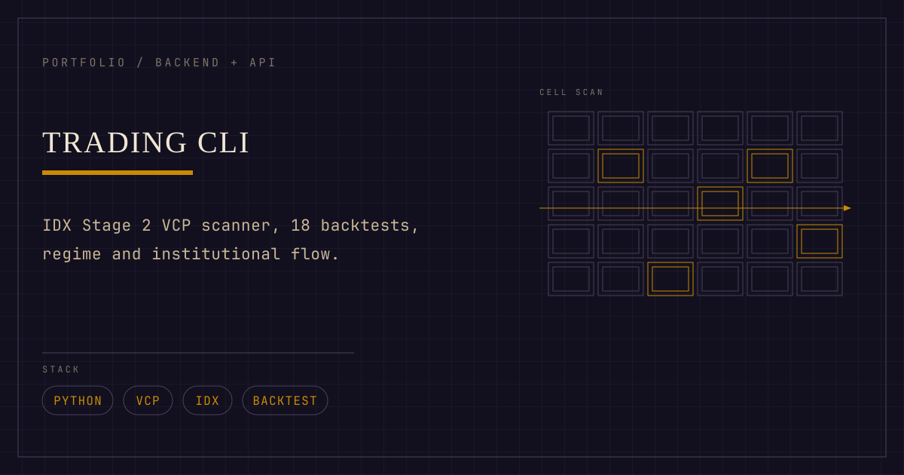
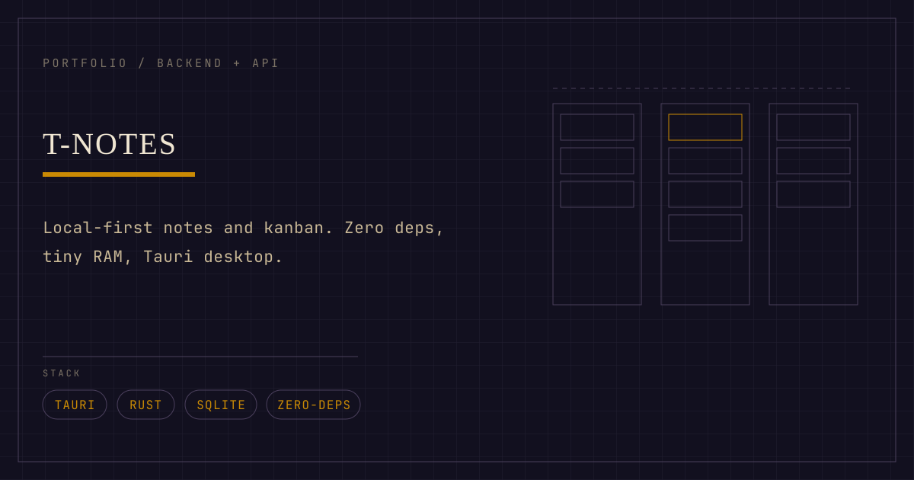

Payment System
01
Backend Engineer & System Architect
Designed and built a production-style payment platform using Go, PostgreSQL,
Redis, Docker Compose, and Next.js. The system supports order creation, payment
charging, HMAC-secured callbacks, refunds, invoice generation, and transaction
logs. Implemented idempotency protection, authorization, transactional outbox
processing, retries, dead-letter queues, and background workers for reliable
asynchronous workflows.
Repogithub.com/mariobgsp/payment-system
Deliverables
- Payment lifecycle API
- Idempotency protection
- HMAC callback verification
- Transactional outbox and DLQ
- Invoice background worker

The Gateway
02
Backend Engineer & API Architect
Built an API gateway platform with a Next.js 15 Backend-for-Frontend layer in
front of a Go gateway service and PostgreSQL. The BFF proxies requests
server-side, applying auth, timeouts and envelope mapping, and never exposes
JWTs to browser JavaScript. The Go gateway implements JWT authentication, rate
limiting, API and store services, and forwarding to configured upstream APIs,
shipped with Kubernetes manifests.
Repogithub.com/mariobgsp/the-gateway
Deliverables
- Next.js BFF proxy layer
- Go gateway service
- httpOnly cookie session auth
- JWT auth with rate limiting
- Kubernetes deployment manifests

routre
03
Go Backend Engineer & Systems Developer
Developed a lightweight local LLM gateway for coding agents using Go. The gateway
provides a unified interface for multiple providers, automatic failover, model-list
refresh, response caching, token compression, and per-agent token and cost
tracking. Designed as a low-memory static binary with no external runtime
dependencies, improving reliability and visibility for local AI-assisted
development workflows.
Repogithub.com/mariobgsp/routre
Deliverables
- Unified LLM provider interface
- Automatic provider failover
- Response caching
- Token and cost ledger
- Lightweight static binary

Trading Suite
04
Backend Engineer & Quantitative Software Developer
Built a financial data platform using Python and FastAPI for Indonesian stock
market analysis. The platform includes live quotes, multi-ticker screening,
technical indicators, bandarmology validation, FIFO portfolio tracking,
market-regime filtering, historical backtesting, and AI-generated market
summaries. Designed data-processing workflows and API endpoints for market
analysis, portfolio calculations, and reproducible trading research.
Repogithub.com/mariobgsp/trading-suite
Deliverables
- FastAPI backend
- Live quote integration
- Stock screening engine
- FIFO portfolio tracking
- Backtesting workflows

Trading CLI
05
Python Developer & Quantitative Research Engineer
Created a Python command-line stock screening tool for Indonesian and IHSG
markets. The application detects Stage 2 trends, volatility contraction
patterns, pullbacks, breakouts, and reversals. It also includes
technical indicators, institutional-flow analysis, market-regime filters, multiple
backtesting strategies, and walk-forward out-of-sample evaluation for more
disciplined and reproducible analysis.
Repogithub.com/mariobgsp/trading-cli
Deliverables
- Technical stock scanner
- Breakout and pullback detection
- Market-regime filter
- Backtesting strategies
- Walk-forward evaluation

t-notes
06
Full-Stack Engineer & Application Architect
Built a local-first notes and Kanban application focused on privacy, offline use,
and low resource consumption. The application provides note management, task
organization, and board-based workflows without requiring a cloud account.
Implemented local persistence, a responsive interface, and desktop packaging with
Tauri for users who want full control of their data.
Repogithub.com/mariobgsp/t-notes
Deliverables
- Notes management
- Kanban board workflow
- Offline data persistence
- Responsive user interface
- Desktop application package